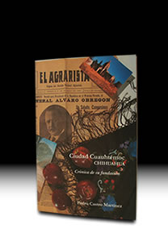

-
Carlos A. MadrazoPensamiento y Acción Para Tiempos Inciertos
-
Álvaro Obregónfuego y cenizas de la Revolución Mexicana

El Vuelo de la Utopía:Revolución y Educación rural en los Años del Presidente Calles (1924-1928).
-
Le grand Cenote Sacré de Chichen ItzaChronique d'une fabuleux pillage du patrimoine archéologique mexicain, son auteur at ses complices (Edition francaise)

El fabuloso saqueo del cenote sagrado de Chichén Itzá
-
Carlos A. Madrazo:el último mito político mexicano del siglo XX
-
The Fabulous Looting of the Sacred Cenote of Chichen Itza (English edition)
-
Adolfo de la Huertael desconocido, de Roberto Guzmán Esparza
-
A la Sombra de un Caudillo:vida y muerte del general Francisco R. Serrano
-
Soto y Gama:genio y figura
-
Adolfo de la HuertaSerie Grandes Protagonistas de la Historia Mexicana
-
Historia del Agrarismo en México(Antonio Díaz Soto y Gama)
- 
Ciudad Cuauhtémoc, Chihuahua:crónica de su fundación
-
Adolfo de la Huertala integridad como arma de la revolución.
-
Adolfo de la Huerta:y la Revolución Mexicana
-
Fronteras Abiertas:geopolítica y expansionismo en Brasil contemporáneo